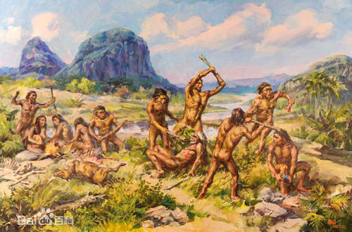

19世纪中叶前，人们都以为人类历史也就几千年。1856年，在德国尼安德特诃谷地附近一个洞穴中发现古人类化石，即著名的尼安德特人(简称尼人)。当时，人们以尼人的时代把人类历史定为5万至10万年。以至于19世纪末，荷兰解剖学家杜布瓦在印度尼西亚爪哇岛发现距今80万年前的大名鼎鼎的爪哇人，因没有同时发现人造工具(石器)，加上其脑容量远小于现代人，仅有900毫升，而未被承认为人类。杜布瓦自己在1940年过世之前也认为他发现的是一种大长臂猿。20世纪二三十年代，中国北京猿人的发现，由于同时发现所制造的大量石器，发现用火的遗迹，从而大大地扩展了人类的历史，从原5万至10万年推至距今50万年前。20世纪40年代，由于北京猿人的确认，加上爪哇猿人新化石等的大量发现，人们承认与北京猿人同类的爪哇猿人属于人类，人类历史延至距今80万年前，1959年，在东非坦桑尼亚的奥杜瓦伊峡谷(过去译为奥杜韦峡谷)发现距今175万年前的石器，使人类历史的纪录再次延长。20世纪60年代，在东非埃塞俄比亚的奥莫诃谷和阿法低地发现距今250万年前的石器。这是人类至今发现最早的石器，人类有200多万年历史记录的说法，依据即在此处。 [1] 20世纪70年代，随着科学研究的深入，发现黑猩猩、大猩猩等也会使用和制造简单的工具。这一发现，动摇了100多年以来的人是“会制造工具的高等灵长类动物”的定义。经世界各国人类学家研究讨论，一致同意把人的定义改为“两足直立行走的高等灵长类动物”。这个修改，把原来不属于人类的南方古猿(俗称南猿)包括了进来，人类历史于是随之延至距今270万年前，渐近400万年。1991年出版的《中国大百科全书·生物学》卷记录了这个变化的结果(见第1013—1014、1209页)。 [1] 20世纪80年代以来，世界各地又发现众多人类化石。其中最为重要的人类化石是：1992至1995年在埃塞俄比亚阿法低地发现地猿(为始祖亚种)，距今440万年前。1998年在同地又发现地猿的另一个更为古老的亚种(为祖先亚种)，距今520万至580万年。2000年，在非洲肯尼亚的土根山区发现距今600万年前的原初人(土根种)，因为发现于千年之交的2000年，故俗称为千禧人。因此，人类的历史现已有600万年记录了。上述一系列成果，在即将面世的《中国大百科全书(第二版)》中，有着较为全面而系统的介绍。
南方古猿被称为“正在形成中的人”。 古类人猿最早出现在非洲东部南部,由原始猿类逐渐进化而来，分化为低等类人猿(如长臂猿)，高等类人猿(如猩猩)，古猿等.。约1200万年前，地壳运动使非洲东部的大地上形成一条大裂谷。大裂谷的形成把非洲分为东方和西方两个独立的动物系统，大裂谷这个阻隔成为人和猿分道扬镳的关键，裂谷之西依然是茂密的湿润的树丛，猿类为适应改变不大的环境，它们不需作出太大的改变来协调， 就注定了它们的迄今仍处在猿类的阶段，如大猩猩等。 大裂谷以东由于地壳变动，降雨量渐次减少，林地消失出现了草原，大部分与现今猿类共祖的祖先族群因而灭绝，其中一小部分惯于攀爬的猿类适应了新环境，学习在地上活动在开阔的环境中生活，形成了独特演化模式，避开了灭绝的危机。大约500万-800万年前，有些类似黑猩猩的猿类物种在雨林周围与稀树大草原连接地带成功建立了奠基者群体，并成功地进化成南方古猿。当对蛋白质和DNA差异的研究最终建立了一个分子钟后，研究发现表明人类与其他动物的分界点是在500万-800万年前（这些证据暗示黑猩猩是我们最近的亲戚），人科动物的历史从此开始。 南方古猿为了适应新环境，不得不开始双足行走，但是它们基本保持着树栖的习惯，南方古猿没有改变它们祖先的多数性状，比如个头较小，明显的性别二形性（雄性平均比雌性大50%），不大的脑，长臂和短腿。南方古猿很大程度上是草食动物，它的门牙比人类的门牙要大得多，而且臼齿也很大。 南方古猿基本有两种类型（也有学者认为有3—4种类型）：粗壮型和纤细型，依身高、体重而有所区别。已经证明存在过两种瘦长的南方古猿，从埃塞俄比亚到坦桑尼亚的东非南方古猿阿法种和南非的南方古猿非洲种。这两种南方古猿的脑都比较小，大约为430-485立方厘米。南方古猿非洲种距今的年代更近，而且除了肢体的比例以外也更像人类。在南部非洲，生活过粗壮种系中的南方古猿粗壮种，在东部非洲还发现了生活在350万年前至300万年前的南方古猿鲍氏种，这些粗壮的南方古猿显得很有力气，但它们是非常平和的，可以和其他瘦长的南方古猿一同生活在同一区域。（根据解剖学进行人科动物分类的人类学家必须记住，冠以阿法种、直立人和能人名称的分类物种并不是指类型，而是指可变的群体和群体中的类群）。
